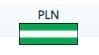
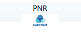
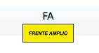

Elecciones 2022

|

|
Conozca al proximó presidente de la republica
|
|
|
| Bandera | Nombre del candidato | Encuesta Universidad Latina | Resultado Encuesta 2 |
|---|---|---|---|
|  | JOSE MARIA FIGUERES OLSEN | 20.2% | Enlace Encuesta 2 |
| RODRIGO ALBERTO CHAVES ROBLES | 11.4% | Enlace Encuesta 2 | |
|  | GERARDO FABRICIO ALVARADO MUÑOZ | 10.8% | Enlace Encuesta 2 |
|  | JOSE MARIA VILLALTA FLOREZ ESTRADA | 7.2% | Enlace Encuesta 2 |